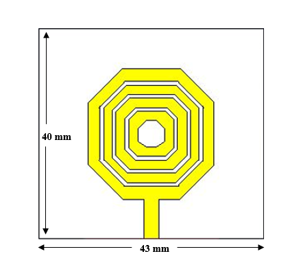
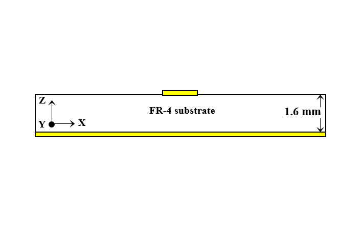
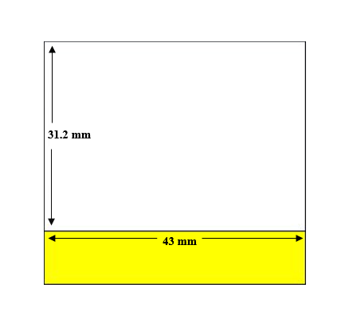

RESEARCH / PROJECTS
DESIGN & ANALYSIS of A DUAL-BAND MINIATURIZED RECTANGULAR PATCH ANTENNA for MILLIMETER-WAVE APPLICATIONS.
Authors: Md. Omar Faruk Noman, Arif Istiaque Rupom, Dr. Md. Azad Hossain
In this work, a miniaturized millimeter-wave patch antenna supporting dual frequency operation, suitable for 5G network is introduced. It employs a slotted patch structure mounted on a FR-4 substrate with thickness of 0.8mm to achieve dual frequency characteristics. The structure of the proposed antenna is characterized by diminutive form factor of 8 × 8 × 0.87 mm3. The operating frequencies of antenna are 30.65 GHz and 38.75 GHz respectively which falls inside the range used by the 5G network. The antenna has been modelled and simulated in CST, with satisfactory outcomes. Proposed design exhibits good results with a S_11-paremeter of -37.0 dB and -56.84 dB at the operating frequencies having bandwidths of 2.32 GHz and 3.5 GHz respectively. The antenna exhibits a highly directional far-field pattern with directivity of 5.33 dBi and 7.62 dBi at 30.65 GHz and 38.75 GHz respectively. As a result of its miniaturized size, the antenna is ideal for use in 5G wireless and cellular systems.


×
DESIGN of A SLOTTED PATCH CIRCULAR ANTENNA ARRAY for BREAST TUMOR IDENTIFICATION.
Authors: Ishrat Jahan, Md. Omar Faruk Noman, Md Ahasan Kabir
As the most aggressive female disease globally, breast cancer has a devastating impact on women all over the globe. Breast cancer patients throughout the world often acquire the incorrect diagnosis due to the shortcomings of traditional systems. It is possible to distinguish between malignant and healthy fatty breast tissue by analyzing their electrical characteristics using microwave imaging for breast cancer identification. This article contrasts four ISM band rounded patch antennas operating at 2.45 GHz to determine the best suited one for microwave imaging. Afterwards, an array of six elements is designed and placed in a rounded pattern to precisely identify breast tumor. This decision was reached on an analysis of the field values and surface current values in the phantom's salubrious breast tissue generated and modelled in CST Microwave Studio.



×
PROJECTS
1. Microstrip Patch Antenna for Brain Tumor Detection..
Designed a Microstip patch antenna with dimension of 45 x 38 mm2 in order to detect the presence of tumor in brain. E-field, H-field and current density were analyzed to detect the tumor. SAR analysis for 1g and 10g tissue was also done.
Tools: CST Microwave studio
2. IOT Based Home Automation System.
Designed an IOT based home automation system for controlling different electronic products such as TV, fan, light using human voice.
Tools: Arduino, Bluetooth Module HC-05, Temperature sensor, LEDs.
3. FM Radio Transmitter and Receiver.
Implemented a radio transmitter for generating and transmitting radio wave. A receiver circuit with automatic gain control system is also designed to receive the transmitted signal successfully.
Tools: LM386 IC, Potentiometer, Antenna, Condenser Mic.
4. Vehicle Estimation for Traffic Control.
Designed a traffic system for estimating number of vehicles in a road.
Tools: MATLAB
5. Design of a Complete Network Topology and Configure It in RIP Routing Protocol.
A complete network topology has been designed with routers, switches, hubs and end elements. The system had been configured with RIP routing protocol.
Tools: Cisco Packet Tracer.
6. Function Generator with Over Voltage Protection.
Designed a circuit to generate different type of waves (sinusoidal, triangular, square) along with over voltage protection.
Tools: LM7805 IC, Resistor, Capacitor, Potentiometer, Op-amp.
7. A Four-Way Traffic Control System Using Microcontroller.
A microcontroller-based system has been designed to successfully control traffic in a four-way lane.
Tools: Microcontroller, MikroC Pro, LED.
8. Implementation of Pulse Code Modulator.
Designed a circuit to generate pulse code modulated signal.
Tools: Analog to digital converter, Op-amp.
9. Design of Animated Website and a personal ortfolio.
Developed a complete website using HTML, CSS, Javascript, PHP, SQL etc where people can watch animated series of different genre and get the latest updates of different series. A personal porfolio was also made using wordpress.
Tools: HTML, CSS, PHP, SQL, Wordpress.
10. Exploring Machine Learning Algorithms and Neural Network to Solve Real World Problems.
Applied various regression and classification algorithms such as linear regression, logistic regression, decision tree, random foret, K nearest neighbor etc to solve real world problem.